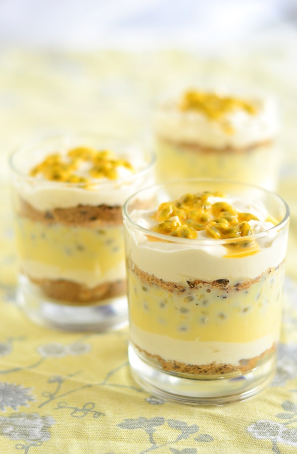

Brasiilia passionivilja dessert
Koostisosad:
Koostisosa
Kogus
Kondenspiim
100 g
Värske passion
150 ml
Vahukoor
200 ml
Rafineerimata roosuhkur
50 g
Gustavi soolakaramelli küpsised
100 g
tume šokolaad
50 g
kaunistuseks vaarikad ja söödavaid lilli
Valmistamine:
-
Vahusta vahukoor koos suhkruga ja sega kondenspiimaga.
-
Purusta eraldi kausis küpsised.
-
Puhasta passioniviljad ja püreeri.
-
Serveeri vahukoore ja kondenspiima segu taldrikule koos passionivilja püree ja purustatud küpsistega.
-
Kaunista riivitud tumeda šokolaadi, vaarikate ja söödavate lilledega.
Pilt valmis toidust:

Allikad:
Koostisosad:
| Koostisosa | Kogus |
|---|---|
| Kondenspiim | 100 g |
| Värske passion | 150 ml |
| Vahukoor | 200 ml |
| Rafineerimata roosuhkur | 50 g |
| Gustavi soolakaramelli küpsised | 100 g |
| tume šokolaad | 50 g |
| kaunistuseks vaarikad ja söödavaid lilli |
Valmistamine:
- Vahusta vahukoor koos suhkruga ja sega kondenspiimaga.
- Purusta eraldi kausis küpsised.
- Puhasta passioniviljad ja püreeri.
- Serveeri vahukoore ja kondenspiima segu taldrikule koos passionivilja püree ja purustatud küpsistega.
- Kaunista riivitud tumeda šokolaadi, vaarikate ja söödavate lilledega.